Shafiul Islam · Fabrication
Fabrication Works
Three pieces designed in Rhino and Grasshopper and made by hand and machine: an interactive object driven by an Arduino, a CNC and laser cut screen for a window, and a 3D printed corner for a sketchbook.
01 MS, first year, second quarter · Instructor: Afroditi Psarra
Sentience
Your personal money agent
The panoptic eye
Shaped like an eyeball, the Personal Money Agent stands for the ever watchful nature of financial institutions. Banks already hold deeply personal data, every transaction, purchase and debt, without consent. The unblinking eye makes that surveillance visible: every interaction confirms that the user is monitored, categorized and controlled.
The dissolution of monetary standards
Money has always had a reference (gold, fiat currency, cryptocurrency); this project imagines a future where even that disappears. Insert a card and the display shows no balance, only the labor a purchase costs, in hours, days or weeks.

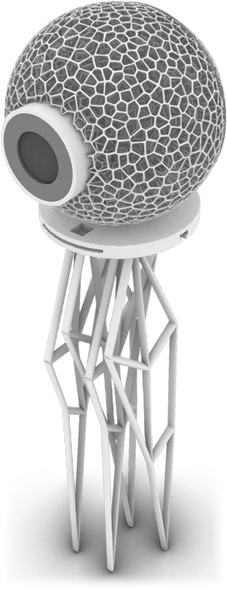

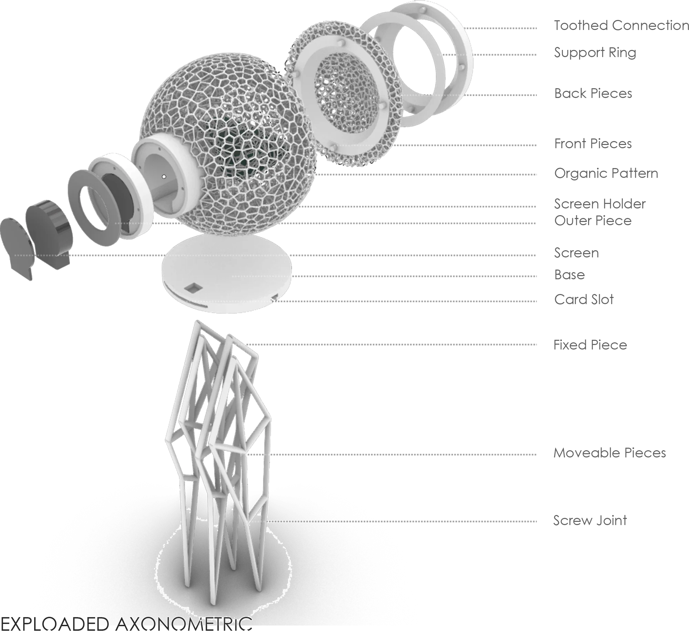
The round screen. Cover the light sensor and it vibrates, then shows the time a purchase will cost.
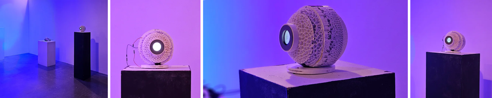
The illusion of choice
Debt shifts from numbers on a screen to time taken from life itself. A short vibration before each message reinforces the submission; a once routine gesture, using a card, becomes a reminder of financial dependence.
A future without financial autonomy
People do not spend money; they spend their time. The machine does not ask how much money one has; it dictates how much of their life they must give, leaving only debt, work and submission.
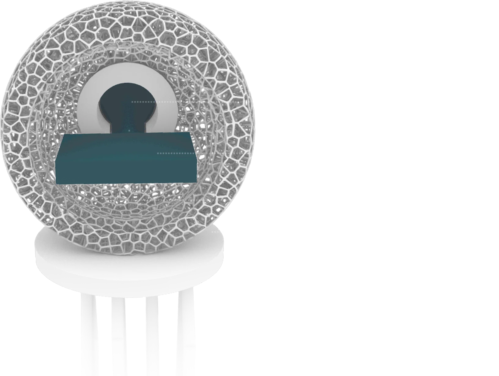
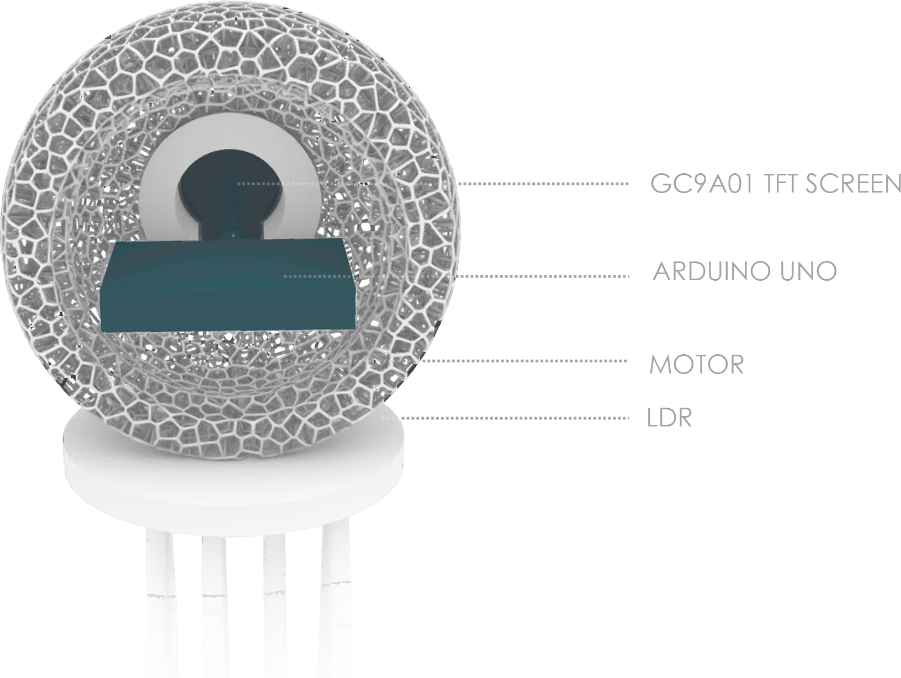
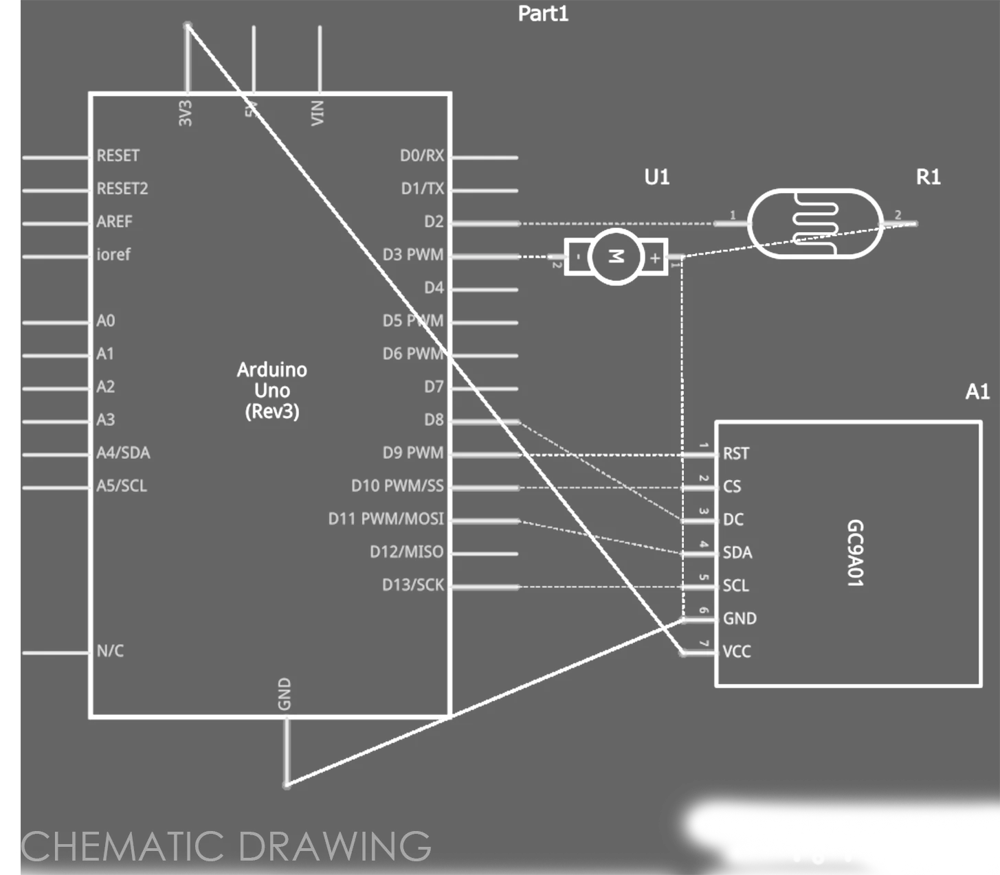

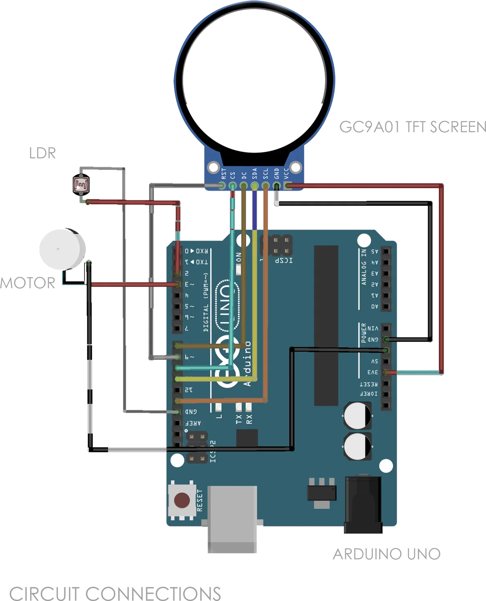

The program, as pseudo code
// Arduino Uno, GC9A01 round screen, light sensor, vibration motor messages = 26 statements of time owed "23 years of work due", "2.5 lifetimes owed", ... default = "Your Personal Money Agent" show(message) clear the screen, white on black stack the words, each line centered setup: start screen and sensor, show(default) loop, forever if the sensor is covered, and was not vibrate 1 to 2 seconds show(a random message) else if it is uncovered again show(default)
02 MS, first year, first quarter · Introduction to Digital Fabrication · Instructor: Bryan Washko
Parametric Screening
For a window aperture
A screen that is both partition and structure: CNC machined wooden bones and disc joints carry laser cut C flute panels. Designed in Rhino and Grasshopper, with structural analysis for stability, material properties and load distribution.
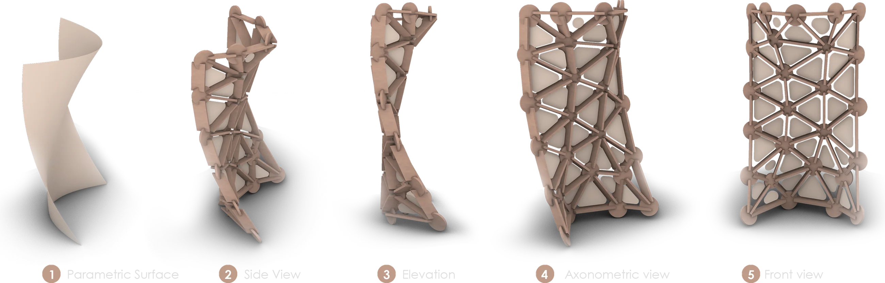
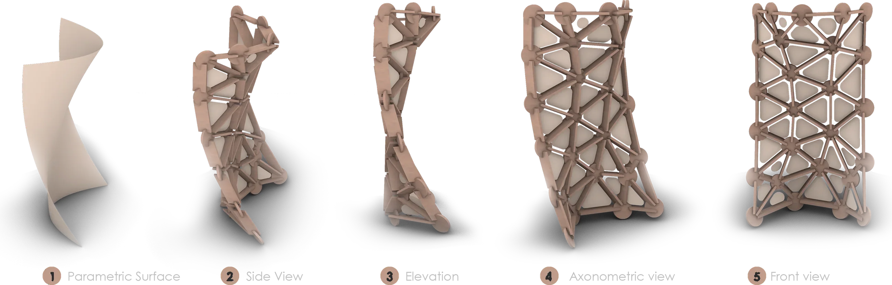
From surface to toolpath
A parametric surface became a network of triangular meshes: simpler to fabricate, still visually dynamic. The triangles generated the CNC toolpaths for the wooden structure and the laser cut files for the screening.
Making
The CNC cut framework was assembled, the laser cut screening attached to it, and final adjustments made for stability and refinement.
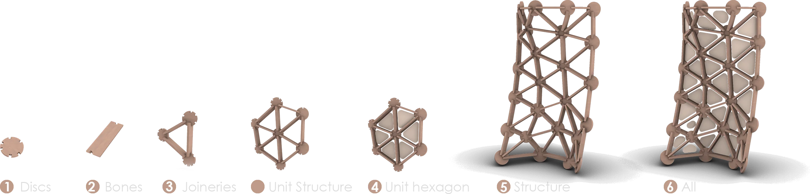
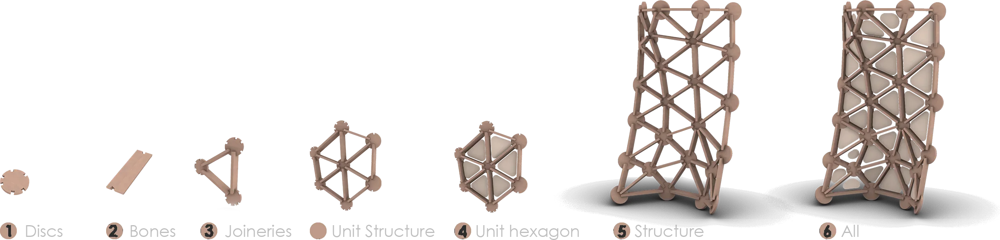
- Structure
- CNC milled wood, disc joints
- Screening
- Laser cut C flute
- Tools
- Rhino, Grasshopper
03 3D printing · Rhino, Grasshopper, Cura
Sketchbook Corner Piece
Protective, adjustable, light
Sketchbooks take rough handling, most of all at the corners. This piece protects the most vulnerable part of the book and adapts to different sketchbook sizes.

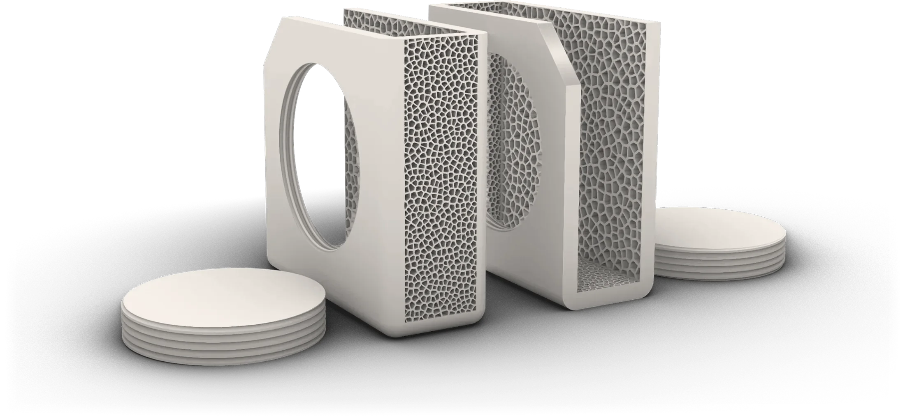
Material optimization
Topological optimization was explored first, then replaced by a Voronoi pattern: simpler, better looking, and lighter on material for a piece that stays sturdy.
Adjustable
A screw mechanism sets the thickness of the corner, so one design fits many sketchbooks.

- Print volume
- 6 × 6 × 6 in
- Weight
- 280 g
- Printer
- Ultimaker, about 11 hours, sliced in Cura
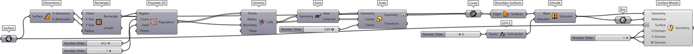